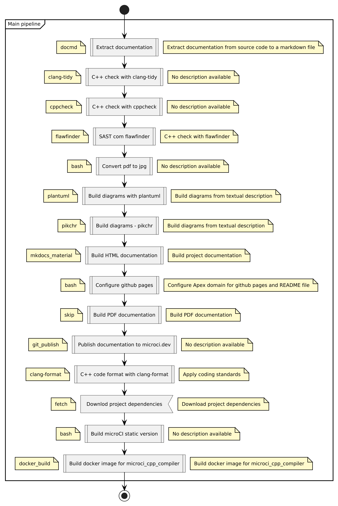
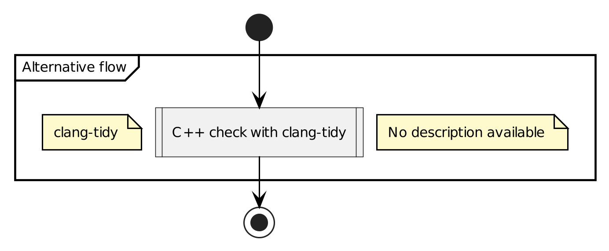
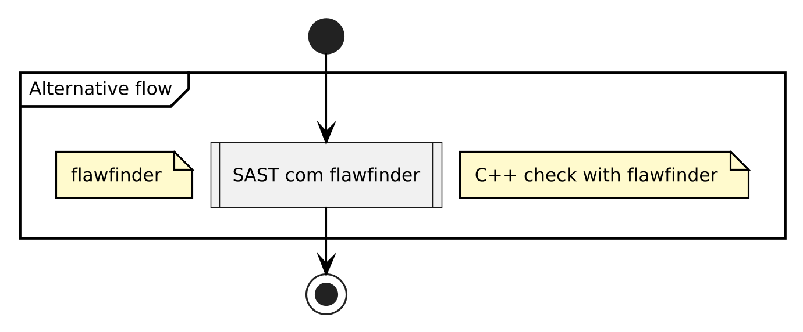
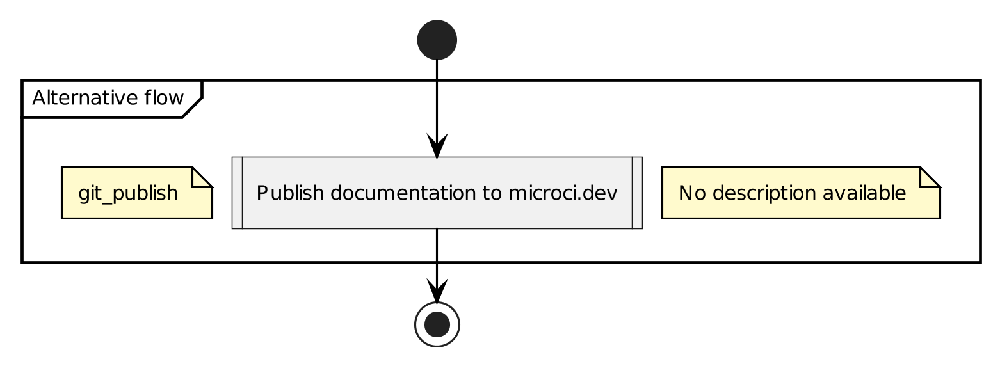

Usage
The basic usage can be obtained by passing the --help option:
microCI --help
░░░░░░░░░░░░░░░░░
░░░░░░░█▀▀░▀█▀░░░
░░░█░█░█░░░░█░░░░
░░░█▀▀░▀▀▀░▀▀▀░░░
░░░▀░░░░░░░░░░░░░
░░░░░░░░░░░░░░░░░
microCI 0.30.0
Geraldo Ribeiro
Opções:
-h,--help Print this help
-V,--version Print the microCI version
-T,--test-config Configuration test
-O,--only Execute only a single step
-U,--update-db Update observability database
-u,--update Update microCI
-i,--input file.yml Load the configuration from file.yml
-n,--new skip Create a placeholder step
-n,--new bash Create a command line step
-n,--new docmd Create a documentation step
-n,--new mkdocs_material Create a documentation step
-n,--new pandoc Create a document conversion step
-n,--new git_publish Create a publish step
-n,--new git_deploy Create a production deploy step
-n,--new plantuml Create a diagram generation step
-n,--new pikchr Create a diagram generation step
-n,--new clang-format Create a code format step
-n,--new beamer Create a PDF presentation step
-n,--new fetch Create a download external artfact step
-n,--new minio Create a upload/download internal artifact step
-n,--new cppcheck Create a C++ SAST step
-n,--new clang-tidy Create a C++ SAST step
-n,--new flawfinder Create a C++ SAST step
-n,--new docker_build Create a local docker build step
Activity diagram
To generate activity diagrams for the workflow use the option --actvity-diagram option
There are two king of steps:
- main step: list of sequential steps executed on the main pipeline
- only step: alternative single step executed alone
The diagrams below are generated automatically by microCI based on
.microCI.yml file.



